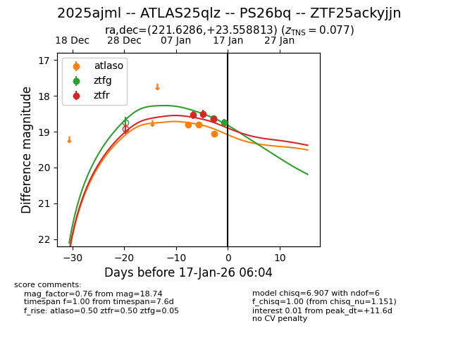
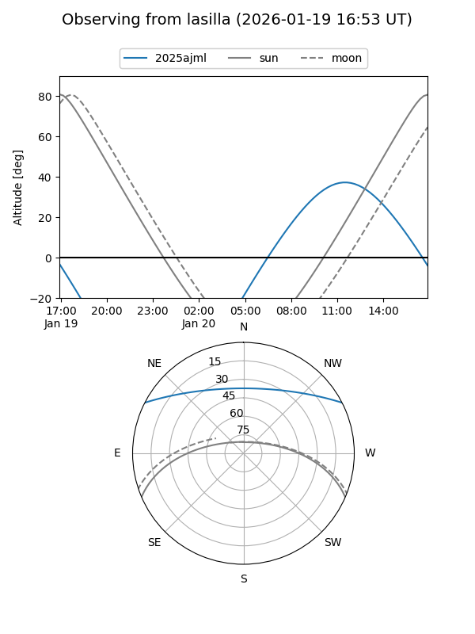
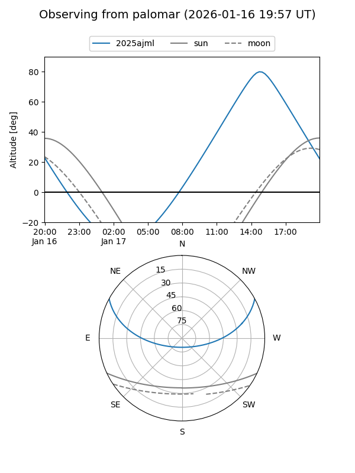
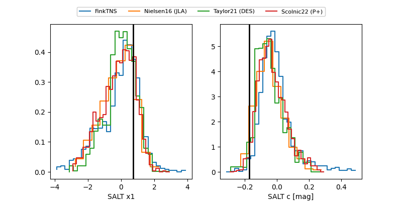

2025ajml
Target 2025ajml at 2026-01-15 19:05
Aliases and brokers:
FINK: link
Lasair: link
ALeRCE: link
TNS: link
YSE: link
alt names
ZTF25ackyjjn (ztf,fink_ztf)
2025ajml (tns,yse)
ATLAS25qlz (atlas)
PS26bq (panstarrs)
Coordinates:
equatorial (ra, dec) = 221.6286,+23.55881
equatorial (HMS+DMS) = 14:46:30.87,+23:33:31.73
galactic (l, b) = (31.5470,+63.81339)
Flags:
confirmed ia
Photometry:
last atlaso=18.84, ztfg=18.63, ztfr=18.65
2 atlaso, 1 ztfg, 3 ztfr detections
Lightcurve

Visibility


Additional plots
